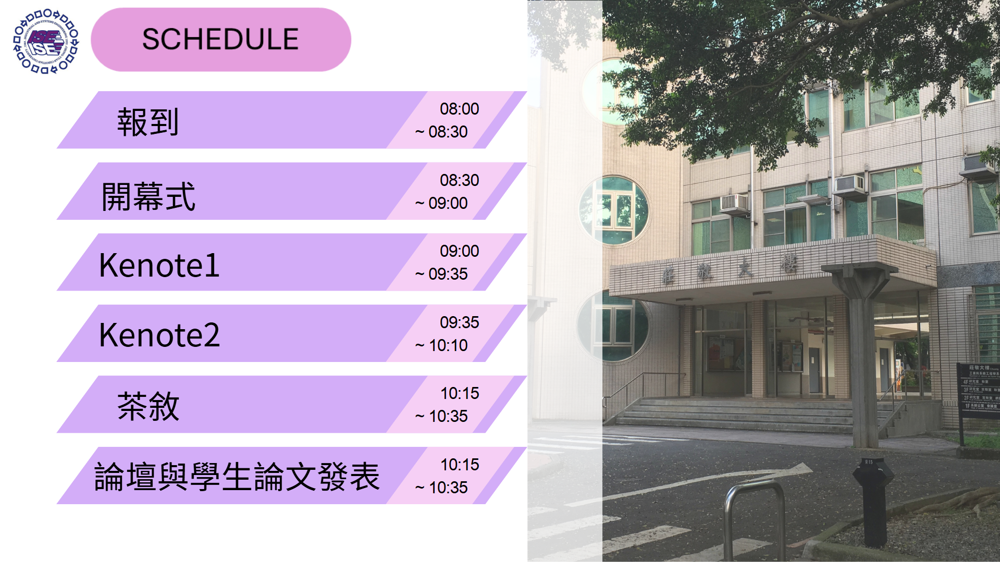

最新消息
掌握研討會最新動態
關於研討會
人因工程與智慧韌性
研討會主題與簡介
「2026 中華民國人因工程學會年會暨學術研討會」由中華民國人因工程學會主辦，中原大學承辦，以「人因工程與智慧韌性」為主題，廣邀國內外人因專家學者、政府單位與產業界夥伴共同參與，深入探討新興科技應用對人因工程未來發展的影響。
承辦單位介紹
本次研討會由中原大學工業與系統工程學系主辦。本系致力於培育兼具理論基礎與實務能力的人因工程專業人才，長期深耕於人機互動、認知工程、職業安全與健康等研究領域，並與產業緊密合作，推動學術研究的實際應用。
協力單位
感謝以下單位的支持與贊助，讓本次研討會得以順利舉行。


議程安排
精彩豐富的議程，讓您滿載而歸
上半天議程
下半天議程
主題講者
來自學術界與產業界的頂尖專家
TBD 教授
中原大學 OO學系
專長於認知心理學與使用者體驗研究，致力於將學術理論應用於產品設計。
TBD 教授
中原大學 OO學系
擁有超過15年的業界經驗，領導團隊打造多款成功的數位產品。
TBD 教授
中原大學 OO學系
專注於高風險環境下的人為失誤分析，如航空與醫療領域。
TBD 教授
中原大學 OO學系
致力於推廣無障礙與通用設計理念，為不同能力的用戶創造友善的產品。
TBD 教授
中原大學 OO學系
專精於工廠自動化中的人機協作安全，以及工作環境的物理人因改善。
報名資訊
立即報名，加入我們的行列
報名費用
- 人因學會會員： NT$3,000
- 非會員： NT$4,000
- 人因學會學生會員： NT$2,200
- 非會員學生： NT$2,500
報名費用包含會議手冊、午餐、茶點及紀念品。詳細資訊請見報名系統頁面。
前往報名系統活動資訊
分享您的研究與創意成果
我本屆年會將聚焦於 AI 與人因工程的結合，探討智慧科技如何影響人機協作、決策支援與風險控管，並呈現跨領域的最新研究成果。議題 涵蓋醫療人因與智慧照護、休閒與運動、交通安全與智慧運輸、職業安全與工作設計、國防與軍事人因、產品設計與創新等方向，期望透過跨界交流，促進產官學研的合作，開創人因工程在智慧社會下的新格局。
重要時程
- 開始投稿和線上報名： 2025.11.01-2026.02.10
- 徵稿截止： 2026.01.17
- 寄發論文接受信： 2026.02.01
- 論文定稿上傳截止： 2026.02.15
- 費用繳交與討論會報名截止： 2026.03.14
- 研討會舉辦日期： 2026.03.28
常見問題
為您解答常見的疑問
聯絡我們
若有任何問題，歡迎隨時與我們聯繫